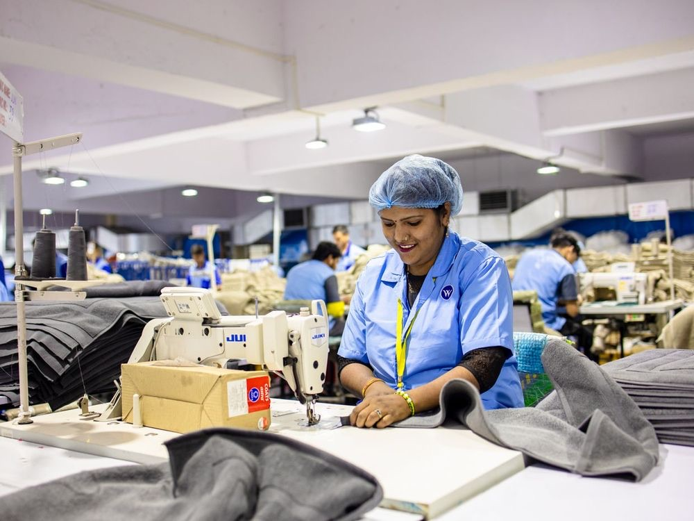

Trishakti Apparel is a full-package (FOB) knit garment manufacturer in Gaidakot, Nepal. We produce private-label knitwear — t-shirts, polos, sweatshirts, hoodies and activewear — to our customers' own designs and tech packs, from fabric sourcing through to retail-ready, branded finishing. Founded in 2023, we build on a 33-year family fashion legacy (Trishakti Stores, est. 1991) and today supply 750+ retail and wholesale stores across Nepal alongside our growing export business.
We are a development partner, not just a contract sewer: with in-house Optitex CAD we take a sketch or reference to a graded, production-ready pattern — and we are candid about what we hold and what is in progress on compliance.
| Product (men's · women's · kids') | Fabric | GSM |
|---|---|---|
| T-shirts, tanks, long-sleeve tees | Jersey — cotton, CVC, poly & modal blends | 135–200 |
| Polo shirts | Pique — cotton & poly-cotton | 180–220 |
| Activewear & athleisure | Performance poly / spandex stretch | 140–260 |
| Sweatshirts & hoodies | Fleece / French terry | up to 400 |
All knit fabrics — 135–400 GSM, sourced to your spec or the latest trend. Sizes XS–XXL. Custom designs, colours, labels & packaging.
Because we cut & sew in Nepal (a Least Developed Country), our garments qualify as Nepali origin under the single-transformation rule — even with imported fabric — and enter major markets duty-free:
| Market | Standard duty | From Nepal | Scheme |
|---|---|---|---|
| European Union | 12% | 0% | EBA (to ~2029) |
| United Kingdom | 12% | 0% | DCTS |
| Canada | 18% | 0% | LDCT |
| Japan | ~9% | 0% | LDC preference |
We supply the Certificate of Origin. (Australia is conditional; the US is not duty-free — we confirm your market on quote.)

Behind every order is a team of ~90 — 80% women, on fair wages, and an inclusive floor that includes deaf team members we're proud to employ. We invest in the people who make your product, because consistent quality comes from a stable, respected workforce.
Leadership: Santosh Rijal (Founder & CEO) · Bishnu Rijal (Principal Founder) · Saroj Rijal (COO) · Uttam Dhakal (Production & Technical Head).
Gaida Chowk, Ward-6, Gaidakot, Nawalparasi (East), Gandaki Province, Nepal · WhatsApp +977 9863618347 · admin@trishaktiapparel.com.np · trishaktiapparel.com.np
Company Profile · v1.1 · published 2026-08-01 · build 2